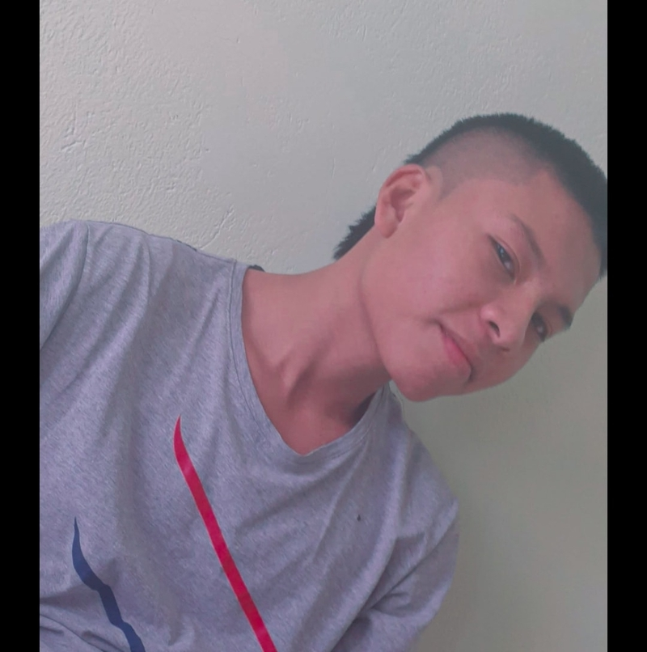
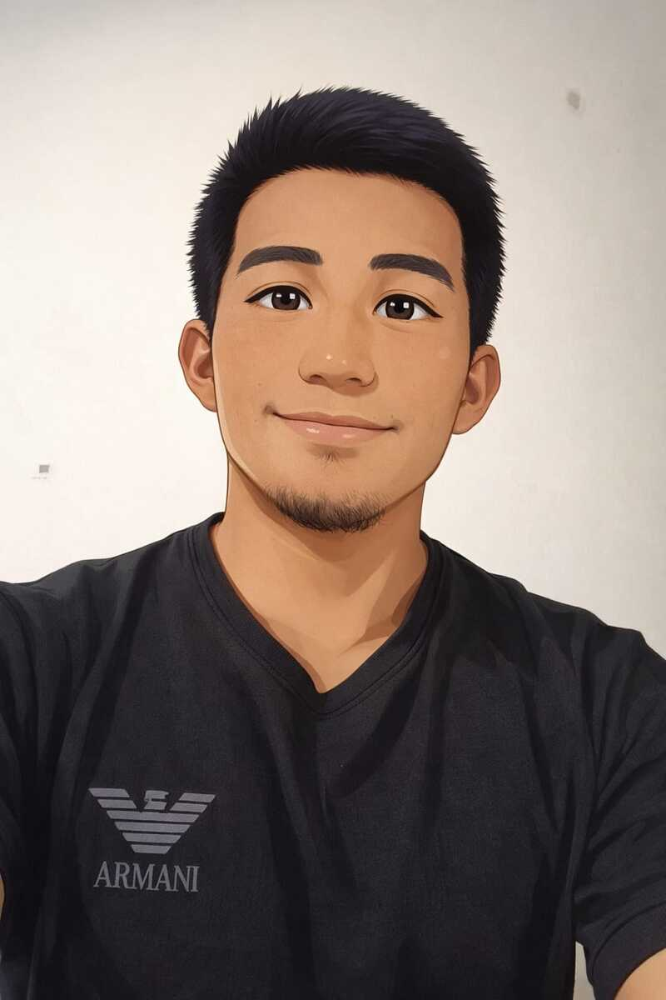
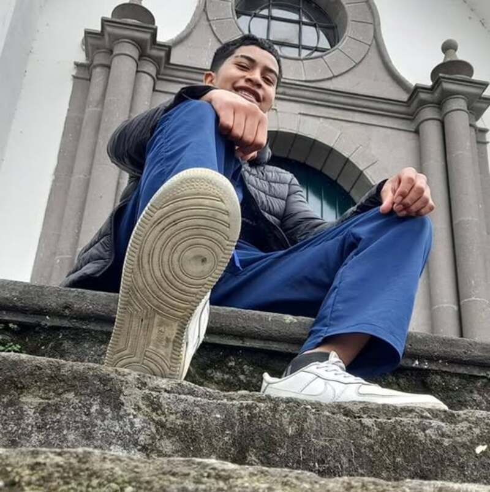

¿Quiénes somos?
Somos un equipo de estudiantes de Ingeniería de Sistemas comprometidos con la preservación del conocimiento ancestral. En un mundo donde la globalización acelera la pérdida de identidad cultural, creamos Raíces Ancestrales Web como una plataforma digital que respeta, preserva y difunde el legado de las comunidades tradicionales.
🎯 Nuestra Misión
Digitalizar, sistematizar y preservar el conocimiento ancestral sobre plantas medicinales, garantizando su acceso libre y respetuoso mediante una plataforma tecnológica confiable. Buscamos frenar la pérdida de saberes tradicionales, empoderando a las comunidades y educando a las nuevas generaciones bajo un marco de calidad y ética.
📐 Enfoque en Calidad
ISO/IEC 25010
Hemos aplicado métricas de usabilidad, fiabilidad, eficiencia de rendimiento y seguridad para asegurar que la plataforma sea intuitiva, estable y rápida.
ISO 9001
Implementamos un sistema de gestión de calidad que nos permite mejorar continuamente nuestros procesos y garantizar que el producto final cumpla con las expectativas.
CMMI
Seguimos buenas prácticas de ingeniería de software basadas en CMMI, gestionando requisitos y asegurando la integridad de los datos.
🧑💻 El Equipo




No somos expertos en medicina tradicional, sino facilitadores tecnológicos al servicio de la memoria cultural.
🤝 Compromiso Ético
- Respetar la autoría intelectual de las comunidades y sabedores tradicionales.
- No comercializar ni patentar saberes colectivos.
- Citar fuentes y colaborar con organizaciones indígenas en la validación de la información.
- Garantizar la seguridad de los datos y la privacidad de los colaboradores.
La tecnología al servicio de la memoria cultural, no al revés.